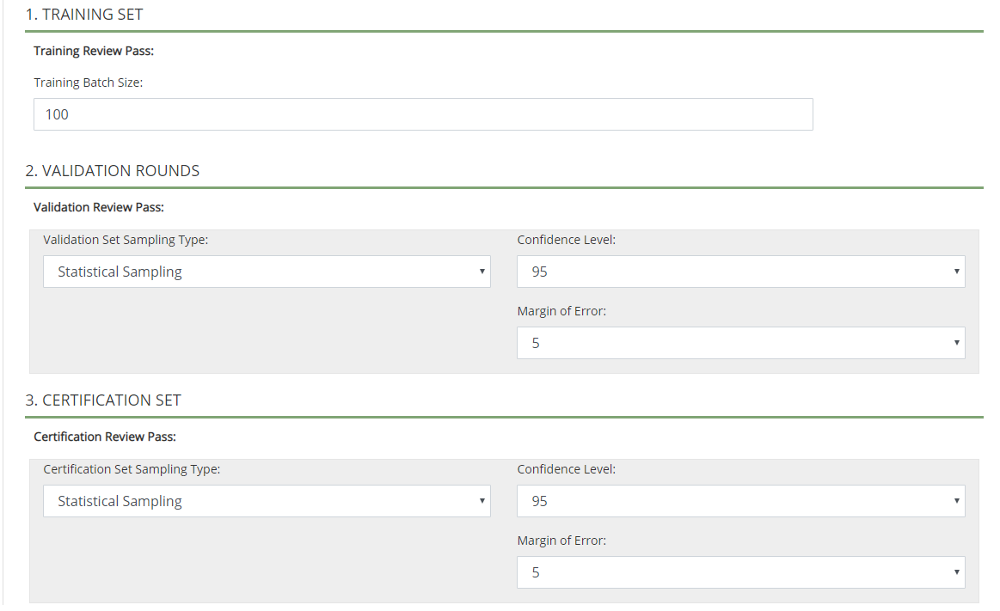

Get started:
-
Review Manage TAR Projects.
-
Start
-
Open the case for which the TAR project is being created.
In the Enter Case pane, click the TAR Project Setup tab, as shown in the following figure:
Complete basic TAR Project Settings:
-
Project Name: enter a unique name of up to 50 characters for the TAR project. Alphanumeric characters and the underscore character are allowed.
-
Project Prefix: enter a unique prefix of up to 10 characters. Alphanumeric characters and the underscore character are allowed. This prefix helps administrators and reviewers identify TAR components within Eclipse, including coding forms, tags, review passes, and so on.
-
Analytic Index: select the Analytics index required for this TAR project.
TAR components begin with a prefix of “TAR_,” to which this entry is appended. For example, if you enter a prefix of “ABC1,” the coding form created for this TAR project is then named “TAR_ABC1.”
Scroll down in the TAR Project Settings form until the bottom of the form is visible.
|
|
Note: The Coding section of the screen and review pass names is filled in automatically as the project is defined. |

Review the default Training Set, Validation Rounds, and Certificate Set configurations (see the following figure), then take one of the following actions:
-
Accept the default settings: skip to step 9.
-
Change the settings: continue to step 6 and/or step 7 as required.
To change the batch size for the training set, enter the desired number (number of documents) in the Training Set Batch Size field.

To change the sampling criteria for the Validation Round, select the sampling type (Fixed Size or Statistical) and associated options as described in the table on the next page.
Permissions: If the coding form and review passes is to be limited to certain user groups:
-
In the Permissions area (on the right side of the window), click Add/Remove Groups.
-
Select required groups and click OK.
|
|
Note: To make a TAR project available to all groups currently defined for the case, click Select All. The project will be unavailable to groups added after this selection (unless you add them). Do not apply security to individual TAR review passes or coding forms; you can control access to these components through TAR project permissions. |
When the project definition is complete, click Save.